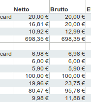

Beim Export der Umsätze in einer Tabelle wird ein Zeitabschnitt, zum Beispiel ein Monat oder ein Quartal angegeben. Es werden nur diejenigen Rechnungen und Ausgabenbelege exportiert, deren Datum in diesem Zeitabschnitt liegen. Hier kann festgelegt werden, ob dabei das Zahldatum oder das Rechnungsdatum berücksichtigt wird.
Bei einer Istversteuerung wird hier üblicherweise das Zahldatum gewählt. Bei einer Sollversteuerung das Rechnungsdatum.
Legt fest, ob die eine zusätzliche Spalte mit der Summe der Ausgaben angezeigt wird.
Spalten mit 0% MwSt. enthalten grundsätzlich immer den Wert 0,00€. Diese können ausgeblendet werden, um die Übersichtlichkeit zu erhöhen.